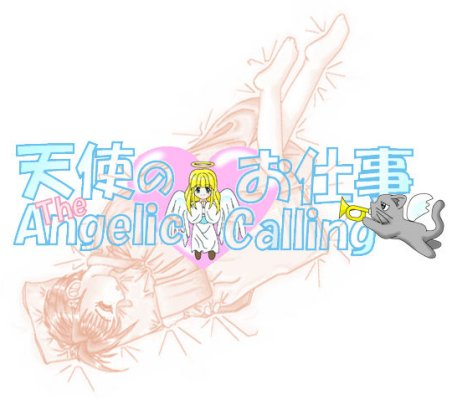

少年少女文庫１００万Ｈｉｔ記念作品
[戻る]
「伊織ちゃん…帰ってきた？」
学校から帰宅するなり真織は声を上げると、
「ううん、まだ帰ってこないけど…」
不安そうに真須美が告げた。
「そんな…
伊織ちゃん、今日学校に来なかったのよ…
どうしよう…
まさか、誘拐されちゃったのかなぁ…」
といまにも泣きそうな面もちで真織が言うと、
「とっとにかく、警察に捜索願を出しましょう！！」
そう言いながら真須美が腰を上げた。
その途端
「いや、その必要はない」
そう言いながら守衛が社務所から戻ってきた。
「その必要はない…って、
あなたは伊織ちゃんの居場所知っているのですか？」
と真須美が尋ねると、
「うん、まぁな…」
守衛は心当たりのあるような返事をすると、
「父さん…そこ何処？
あたし迎えに行ってくる」
そう言いながら真織が腰を上げた。
「これっ待ちなさい…
伊織君にはちょっと私の知り合いの所に
ある試練を受けに出かけている。
まぁ、３日もすれば戻ってくると思う」
と説明すると、
「真織、それまでの間、
我々は黙って伊織君が帰ってくるのを待とうじゃないか」
そう二人に言い聞かせると、
守衛は真須美が煎れたお茶をすすった。
一方、パラレルから事の詳細を聞かされた瑞樹は、
「まったく…伊織のヤツ」
——ふぅ
「…大丈夫かなぁ…」
っとため息混じりで空を眺めていた。
ゴロゴロゴロ…
渦巻く黒雲に覆われた空からは雷鳴と稲光が輝く、
——少年少女文庫１００万Ｈｉｔ記念作品——

原作 １００万Ｈｉｔ記念作品製作委員会
第五話担当：風祭玲
［title：Dora／illustration：HikaruKotobuki & Hamuni］
第五話「プロジェクト・縁結び」
『…伊織があの二人がちゃんとお互いを意識するように数々の場面を整えて、
そして、めでたく瑞樹クンと芹沢さんがそれぞれ相手を意識したときに、
素早く糸を結ぶ。
天使が縁結びの仕事をするときはいつもこうやっている…』
伊織の頭の中をシリアルの言葉がエンドレスで駆けめぐっていた。
「そんな…それをたった３日でやるなんて…」
呆然と立ちつくす伊織を見たシリアルは、
「とは言っても絶望するのはまだ早いよ、
さっき言ったように瑞樹くんには熱意がある。
それに対して、芹沢さんは瑞樹クンの熱意に照れているだけだ、
伊織はその芹沢さんの照れを取り除けば…
…おっおいっ、聞いているのか？」
シリアルの声を無視して伊織は歩き出すと、
「あっ、伊織…何処に行っていたの？
急にどこかに行っちゃたまま戻ってこないので心配したよ」
と伊織の姿を見つけた瑞樹はそう言いながら彼女に寄ってきたものの、
しかし、伊織には彼の言葉は通じていないようだった。
「伊織…？」
トボトボと伊織は教室に戻るとそのまま帰り支度を始める。
「…あっ、あのさっきはごめんなさい…
僕が言い過ぎた…
伊織…僕のために芹沢さんの所に行ってくれたんだね」
瑞樹は伊織にそう言って謝ると、
ガタン！！
伊織は立ち上がると、
「悪い、おれ、さき帰るわ…」
と瑞樹にひとこと告げると、そそくさと教室から出て行った。
「あっ、ちょっと待って伊織…」
瑞樹も慌てて追いかける。
そんな彼を無視して伊織が教室のドアを開けた途端、
ドン！！
伊織とは逆に教室に入ろうとした真央と出会い頭にぶつかってしまった。
「きゃっ！！」
ドタン！！
はじき飛ばされて尻餅をつく伊織、
「あっ、進藤、悪いっ！！」
尻餅をついた伊織を見た真央は慌てて彼女の手を引いて起こすと、
「もぅ帰りか？」
と尋ねた。
「…………」
伊織は何も答えずに彼の手を振りきるとそのまま駆け出していった。
「…なんだ…アイツ…」
真央は走り去っていく伊織の後ろ姿を眺めていると、
「………全く鈍い連中ね！！」
「え？」
突然響き渡ったその声に真央と瑞樹が振り向くと、
藤本幸子が腰に両手を置いて仁王立ちのようにして立っていた。
「いまの進藤さんの様子を見て何も判らないの？」
「はぁ？」
「あれはねぇ
何か悩み事を抱えているポーズよっ
そんなことも判らないなんて…
全くコレだから男は鈍いのよねぇ…」
呆れ半分に二人に怒鳴った。
「そっそんなこと言ったって…」
瑞樹が反論すると、
「ほらっ、笹島クンは進藤さんの幼なじみでしょうっ
こう言う時には力になるのっ
それと早川クンも一応彼氏なんだから、
ちゃんと彼女の面倒を見るのよっ」
と矢継ぎ早に命令をする。
「え？、別に進藤は俺の彼女なんかじゃぁ…」
そう真央が口ごもった途端、
「男だったらぐちゃぐちゃ言わないで、サッサと行動をするっ！！」
幸子のカミナリが教室内に響き渡った。

ゴロゴロゴロ…
相変わらず空には黒雲が覆い、稲光の閃光が雲間に輝いていた。
そして、そんな街中を伊織は一人で歩いていた。
ガラガラガラ！！
一際大きい雷鳴が轟くと、
「うひゃぁ！！」
思わず伊織は両耳を塞ぐとその場にしゃがみ込んでしまった。
『…あら…伊織ちゃん、カミナリは苦手？…』
伊織の脳裏に朝、真織が言っていた言葉が再生される。
「カミナリなんて大っ嫌い！！」
そう呟くと再び歩き出す。
とそのとき、
「おーいたいた、進藤！！」
伊織の姿を見つけた真央が伊織に駆け寄ってきた。
「なに？」
ぶっきらぼうに伊織は言うと、
「ちょっと、なにか喰っていかねーか？」
真央はそう言いながら、その先にあるハンバーガー屋を指さした。
ザワザワ…
夕方のハンバーガー屋は下校途中の学生達でごった返していた。
「…なに落ち込んで居るんだか知らないけど…
もしも俺で良かったら力になるけど…」
ビーフバーガーを囓りながら真央は伊織にそう言うと、
「うん…」
力無く伊織は答える。
「………」
真央はやや気まずい雰囲気を感じ取ると、
「あっあのさ、知っていると思うけど俺んち神社なんだ…」
と話しかけた。
「良く知っているよ…」
「…えっ、進藤さんには話ったっけ？」
「話さなくても良く知っているよ」
「えっえっえーと…
…そうだ、でだ、色々な願い事が叶うことで有名なんだ、
もぅ、お正月の初詣になるとそれこそ…」
と真央がそこまで説明すると、
ガタン！！
突然伊織が立ち上がると、
「行こうっ！！」
「え？」
「早川神社に…」
と伊織はそう言うと店から飛び出していった。
「え？、おっおいっ！！」
慌てて真央も伊織の後を追いかける。

ハァハァ…
息を切らせながら早川神社へと続く石段を登って行く伊織の様子を見て、
「そんなに急ぐなよっ」
と後を追う真央が声を上げた。
「早川クーン…」
「ん？、あぁ藤本に笹島…」
呼ばれた声に真央は立ち止まると、
藤本と瑞樹が追いつくのを待った。
「進藤さん見つかったんだ」
安心しながら藤本が言うと、
「それだけどなぁ…いきなりウチの神社に行こうってね」
困った表情で真央が言うと、
「全く…早川クンて本っ当に乙女心が判らないのねぇ」
と飽きれた顔で真央に言う。
「そんなこと言ったって俺、女じゃないから…」
言われた真央が反論すると、
「早川クンも一度女の子になった方が良いんじゃないの？
真織ちゃんとか言ってね、こうしてセーラー服着て…」
と言いながら藤本はクルリと廻ると制服のスカートを広げた。
「やかましいっ、だいたい女の俺なんて想像するだけで寒気がするぞ！！」
「あら…でも可愛いと思うよ」
「お前なぁ…」
そう言い合う二人を眺めながら、
「…それが居るんだよなぁ…伊織の本当の世界には…」
と後を追ってきたシリアルはボソッと呟いた。
階段を駆け上る伊織の視界にユックリと早川神社が姿を現して来た。
「うわぁぁぁぁ〜
同じだぁ…」
伊織は我を忘れて駆け出した。
「おっおいっ、進…」
真央は伊織を呼び止めようとしたが、
何故がその気にはなれなかった。
「あははは…」
伊織は境内に居るハトを追いかけ回すと、
バタバタバタ！！
彼女に驚いたハトが一斉に飛び立った。
「はははははは……
何もかも同じ…
…でも、
でも…ココはおれのいる場所ではない…」
ふと現実を考えたとき伊織の目から涙がこぼれてきた。
「会いたい…真織さんに…」
そう思った途端、涙が止まらなくなっていた。
「おっ、おいっどうしたんだ進藤！！」
「信じられない…伊織が泣くなんて…」
突然泣き出した伊織を見て真央と瑞樹はあわてて傍に駆け寄った。
「ううん、なんでもない…
…何か知らないけど涙が溢れてしまって…」
そう言いながらも伊織はハンカチを目頭に当てる。
「あらあら…
真央ちゃんが女の子を連れてきたと思ったら、
何泣かしているの！！」
箒を持ち、白襦袢に緋袴の巫女装束姿の女性が社の陰から姿を現した。
「あっ、母さん…」
真央は声を上げると、
「いやっ、別に俺が泣かしたワケじゃないよ」
と言い訳をすると、
「男の子が言い訳をするんじゃありません」
真須美は真央を見据えるとそう言った。
「………」
真央は不満そうな顔をすると、
「で、なに？、どうしたの？」
と真須美は泣いている伊織に優しく話しかけた。
「うっおばさん…（ふぇーん）」
伊織は真須美に抱きつくと文字通り大泣きをする。
「あらあら…」
真須美は困った顔をしたがしかし優しく伊織を抱きしめてあげた。
「この子、疲れてたみたいねぇ…」
散々泣いた後、
早川家で居間に上がらせて貰った伊織は、
いつの間にか寝入ってしまっていた。
そしてそんな伊織を見ながら真須美がそう言うと、
「確かに、今日の進藤の様子はおかしかったな」
「うん、あさ学校に来た途端倒れたし…」
「放課後、妙に元気ぶっていたし…」
「何やら深刻な悩みでも抱えているみたいだったし…」
「とにかく落ち着いたら、ゆっくり話を聞いてみましょう、
いいわねっ」
藤本のその一言で、早川家の居間で寝ている伊織を、
瑞樹・真央そして藤本の３人が静かに見守ることにした。
その頃、社務所では、
「これはこれはアーリィ殿…」
守衛が訪問をしてきた天使アーリィ・ウィングに挨拶をしていた。
「突然の訪問なのに、すまぬな」
アーリィは守衛にそう言うと、
「いえいえ」
守衛はそう返事をしながら、
アーリィに煎れ立てのお茶が入った湯飲みを差し出した。
「おぉ、これはかたじけない」
ズズー…
手渡されたお茶をアーリィが啜っていると、
「さてと、そこにいるのは判っているっ
そんな物陰で見ていないで、出てきたらどうなんだ」
と社務所の物陰に向かって声を掛けた。
「…バレてましたか…」
そう言って出てきたのはシリアルだった。
「こっこれは…」
シリアルを見て守衛が驚くと、
「大丈夫、彼はわたしの不肖の部下の下僕でしてね
いまこの世界で起きているトラブルに関してコチラに来ているのです」
とアーリィは説明をする。
「と言うのは…？」
守衛が尋ねると、
「実は今朝程からこの世界と別のもぅ一つの世界が半ば衝突状態になっていて、
それで向こう側の人間が一人、
コチラに落ちてきてんだよなっ、シリアル・リンクっ…」
とアーリィは話をシリアルに振った。
「はっはい…」
緊張しながらシリアルが返事をすると、
「で、イオ・リンクはどうしてる？
縁結びの仕事は順調なのか？」
とシリアルに尋ねると、
「え゛っ、それもお見通しなんですか？」
シリアルは驚きの声を上げた。
「ふっ、わたしを誰だと思っている、
パラレルの上長でもあり、
この世界を管理している天使アーリィ・ウィングだぞ」
とシリアルに告げた。
「はぁ…」
それを聞いたシリアルはため息をつくと、
「それがどうも自身を無くしちゃったみたいで…」
「自身を無くした？」
「えぇ…パラレルから縁結びの方法を教えて貰ったときには
やる気満々で作業に取りかかったのですが、
あまりにも強引に進めてしまったので糸を壊してしまったんです」
と大まかな経緯を説明すると、
「ふむっ、確かに縁結びは慎重に作業を進めなければならないな」
アーリィはそう納得しながら頷くと、
「で、それですっかり自身を無くしてしまって…」
とシリアルは話を続けた。
「なるほど…それで落ち込んでいると…
まっ、初心者にはよくある話だ」
ズズー…
アーリィは３度湯飲みに口を付け、
「シリアル…早川家の居間にあるモノが落ちてきている。
それを、イオ・リンクに渡せ」
とシリアルに告げた。
「あるモノ？」
「行けばわかる…」
アーリィはそう言うとまた湯飲みに口を付けた。
「あれ？…母さん…？」
居間で何かを見つけた真央は真須美に声を掛けると、
「なに？」
台所に立っていた真須美が居間に戻てきた。
すると、
「このヌイグルミ…いつ買ったの？」
と言いながら真央は居間の隅に転がっている特大のネコのヌイグルミを指さした。
「え？、母さん…知らないわよ…
真央ちゃんが買ったんじゃぁないの？」
そう言いながら真須美は首を捻った。
「へぇ…早川クンってこう言うのを買うんだ」
ヌイグルミを手にした藤本はニヤケながら真央に言うと、
「ちっ違うっ、俺はこんなネコのヌイグルミなんて知らないぞ」
真央は思わず大声を張り上げた。
「でも、いい香りがしますよ」
瑞樹は藤本から手渡されたヌイグルミを抱き抱えながら、
ほのかに香る臭いを嗅いでいると、
「うぅん…」
と声を上げて伊織が目覚めた。
「あっ進藤さんっ目が覚めた？」
藤本が伊織に声を掛けると、
「あっあれ？…」
目を開けた伊織はしばらくの間、状況が判らないようだったが、
「あっ…」
慌てて起きあがると思わず畏まってしまった。
「良いのよ良いのよ…」
真須美は笑顔で言うと、
「伊織…寝ちゃったんだよ…」
っとヒソヒソ声で瑞樹が状況を説明した。
「そっそうなの？」
顔を赤らめながら伊織が返事をすると、
「！！っ
そのヌイグルミは？」
っと伊織は瑞樹が手にしているネコのヌイグルミを指さした。
「あぁ、それか…進藤にあげるよ」
と真央は伊織に言う、
「え？」
真央の申し出に伊織が驚くと、
「どういうワケかうちに転がっていたんだよ…
誰も買った覚えがないのに…」
そう言いながらヌイグルミを伊織に手渡した。
「…これは…真織さんの臭いだ…
そうか、これもココに落ちてきたんだ…」
そう呟いて伊織はヌイグルミをギュッと抱きしめていると、
「おや、お目覚めですか？」
守衛がそう言いながら居間に入ってきた。
「あっ、お邪魔しています」
瑞樹と藤本が頭を下げると、
「これはまた、真央…お前、顔に似合わず大胆だなぁ」
と守衛は感心しながら真央に言う、
「なっなにが…」
「女の子を一度に二人も連れてくるなんて、
ふっ、さすがはわしの息子だ、ははははは」
守衛はご機嫌になって笑い始めた。
「おっ親父ぃ〜っ！！」
そう言いながら真央の顔は見る見る引きつっていく…
「さて、そこのお嬢さん…」
守衛は伊織を見ると声をかけた。
「はいっ？」
驚いて伊織が返事をすると、
「なにを悩んでいるのか聞かないが、
もしも悩んでいるとしたら、
思い切って相手の懐に飛び込んでみたらどうかな？」
と守衛は話す。
「え？」
「虎穴に入らずんば虎児を得ず、
退路を断って飛び込めば自ずと道は開けると思うのだが」
伊織は守衛にそう言われると、
「虎穴に入らずんば虎児を得ず…」
そう呟きながらヌイグルミを見つめた。
『…大丈夫、伊織ちゃんなら絶対大丈夫…』
そのとき伊織の耳にそう囁く真織の声が聞こえたような気がした。
すると、伊織の目に輝きが戻ってきた。
「……おじさんありがとう！！」
伊織は立ち上がると、守衛に礼を言うと、
「早川クン、このヌイグルミありがたく貰っていくね」
と告げると、伊織は早川家を飛び出していった。
「………戻ったな…」
「うん…いつもの伊織に…」
「みたいだね」
後に残された３人は呆気にとられたまま伊織を見送っていた。
「シリアル…どうやらキミの出番はなかったようだな」
早川家の屋根の上でアーリィが呟くと、
「それにしても、
真織さんのヌイグルミをココに飛ばしておくなんて、
よく考えつきましたね」
シリアルが感心しながらアーリィに言うと、
「あのヌイグルミがここに来たのはわたしのせいじゃない、
真織って子の念が染みこんだヌイグルミが、
イオ・リンクを追ってここに来たんだ」
と説明をした。
「そっそう言う物ですか？」
感心しながらシリアルが言うと、
「さて、シリアル・リンク、
あなたも早くイオ・リンクの元に行った方が良いのでは？
残された時間はそんなにないぞ」
と告げると、
フッ…
アーリィはシリアルの目の前から姿を消した。
「ありがとうございます、アーリィ様…」
シリアルはアーリィが消えた後にそう言うと、
シュタ！！
スグに伊織の後を追った。
その夜…
「ねぇ、シリアル…一つ聞いて良い？」
進藤家の伊織の部屋でパジャマ姿の伊織が、
ヌイグルミを抱きしめながらベッドの上にいるシリアルに尋ねた。
「なんだ？」
「昼、おれはこの世界に引っ張り込まれた。っていったよな」
「まぁな」
「じゃぁ、この世界にいたおれは何処に行ったんだ？
おれの世界に行ったのか？」
そう言うと伊織は真織や早川家の人に迷惑を掛けている。
もぅ一人の自分の姿を想像した。
「いや、向こうの世界では伊織は行方不明になっている」
シリアルは丸くなりながらそう言うと、
「え？、どういうこと？」
伊織は思わす聞き返した。
すると、シリアルは顔を上げると、
「伊織…この世界は向こうの世界の鏡であることは知っているな」
と伊織に告げた。
「うん…」
伊織が頷くと、
「じゃぁ一つ尋ねる、
向こう世界で最初にパラレルとコンタクトを取っていたのは誰？」
とシリアルは伊織に質問をした。
「…瑞樹だろう…」
伊織はそう答えると、
「ピンポーン！！」
シリアルはそれが正解であることを告げた。
「じゃぁ、伊織と瑞樹、
こっちの世界と向こうの世界の違いは？」
シリアルからの続いての質問に、
「んーと、文字通りひっくり返しだった…
…ってことは…
じゃぁ、この世界で天使とコンタクトを取っていたのはおれ？」
伊織はシリアルに向かって叫ぶと、
「ピンポーン！！」
シリアルは動じずにそれが成果であることを告げた。
「じっじゃぁ…？
この世界のおれは瑞樹と芹沢の様子を見て天使にお願いをしたのか？」
そう伊織が推測すると、
「まぁそう言うことになるね、
伊織の世界では瑞樹にはそう言う意識はなかったみたいだけど、
でも落ち込む芹沢を見て結果的にパラレルにお願いしたのに対して、
この世界では伊織が頑張る瑞樹を応援しようとして天使にお願いをしていた。
丁度そのとき、伊織の世界とこの世界とがニアミスを起こしてしまって…」
とそこまでシリアルが言うと、
「天使がくる前におれがこの世界にやってきてしまったと言う訳か…」
その先のセリフを伊織が言う。
「ピンポーン」
「じゃぁ、この世界にいたおれは？」
伊織は一番の疑問をシリアルにぶつけると、
「ボクの目の前にいるよ」
とシリアルは答えた。
「え？」
「この世界の伊織の上に伊織は居る。
なんて言ったらいいのかなぁ…
伊織と伊織が重なり合って居るんだ、
つまり、いまの伊織はこの世界の伊織であると同時に、
向こうの世界の伊織でもあるんだよ。
だけど、シードの力のお陰で伊織はココの伊織の上にいる」
「？、じゃぁ、ココの伊織はいまどうしているの？」
首を傾げながら伊織が尋ねると、
「だからボクの目の前にいるって…」
「え？」
「伊織と伊織は重なって居るんだって…」
「？」
「納得したか？」
「………？」
「まぁいいか、さて、明日は早いんだろう、お休み」
そう言ってパラレルは大きなあくびを一つすると顔を伏せた。
「おれはおれでここのおれでもある？
なんだ…それは？」
伊織はそう呟くと毛布を被った。
そして、何かを思いだしたように毛布から顔を出すと、
「なぁ…最後一つだけ聞いて良いか？」
とシリアルに尋ねた。
「なに？」
「ココの世界の天使ってどんな奴なんだ？」
「パラレルとは正反対のキャラだよ」
「パラレルの正反対…
そうか、いいなぁ…そう言う天使って…」
シリアルの返事を聞いた伊織はそう呟くと、
「それもまた疲れるけどね…」
とシリアルは答えた。
その直後
「はくしょん！！」
天界にアーリィのくしゃみが響いた。
「はぁ、ついに４８時間を切ったか…」
翌日の昼、屋上でシリアルが空をそう呟くと、
ゴロゴロゴロ…
相変わらず天ヶ丘高校の天空には黒雲が渦巻いており、
所々で稲光が明滅していた。
しかし、伊織は昨日のような切迫さはなくどこか余裕がある様子だった。
「伊織っ、大丈夫なのか？」
振り返りながらシリアルが尋ねると、
「ど〜んとうぉ〜りぃ〜っ！！」
と言いながら空を眺めている。
「どういう奥の手があるのかは知らないけど、
大丈夫なんだろうねぇ」
やや不安そうにシリアルが再度尋ねると、
「ふふんっ、虎穴に入らずんば虎児を得ず…」
伊織はそう言い残すと教室へと戻っていった。
「はぁ、虎穴？」
——何を始める気なんだ一体…
シリアルは不安そうに伊織の後ろ姿を眺めていた。
「てへへ…ども、こんにちわ…」
放課後、伊織は瑞樹の手を引いて再び新体操部に顔を出した。
大会が間近に迫っているだけにみな緊張した面もちになっていたが、
「あら…ついに決心してくれた？」
手具を持ちながら半ばトレードマークとなっているレオタード姿の芹沢秀美が
にこやかに伊織に近寄ってくると、
「えぇまぁ…芹沢さんみたいにスタイルが良くなればなぁ…
なんて思ったりもしてましてね」
とやや照れながら伊織が答えた。
「うふっ、そう？」
芹沢もつられて照れ笑いをすると、
「でも、嬉しい…進藤さんがやっと決心してくれたなんて…」
と言いながら芹沢は伊織に近寄るとギュッと抱きしめた。
フッ…
レオタード越しに香ってくる彼女の汗の香りと、
クニッ…
と言う胸の膨らみが伊織を刺激する。
——おっ男の身体だったら、
メチャ嬉しいシチュエーションなんだけど、
この状況でコレってことは、
まっまさか…こっちの芹沢ってその気がある奴なのか？…」
などと考えるうちに伊織の額に一筋の冷や汗が流れた。
そして、
「あっあのぅ…」
と伊織は顔を赤くしながら声を掛けると、
「あっあぁ、ゴメンね嬉しくってつい…」
そう言いながら芹沢は慌てて伊織から離れると、
「じゃぁ早速、部員登録してくれる？」
と言いながら１年の部員に部員名簿を持ってこさせた。
「あっ、それで、実は一つだけお願いがあるんだけど…」
頃合いを見計らって伊織が芹沢にある提案すると、
「なぁに？」
ページをめくりながら芹沢が尋ねた。
「あのぅ…瑞樹…
いや、笹島瑞樹を新体操部のマネージャとして
採用していただけませんか？」
と伊織は芹沢に告げた。
「え？」
芹沢が声を上げる前に、
「えぇ！！」
それを聞いていた瑞樹が先に声を上げた。
「いっ伊織…いきなり何を言うんだ！！」
慌てふためいた瑞樹が伊織に食ってかかると、
「ふふん、虎穴に入らずんば、虎児を得ず…」
昨日守衛に言われた台詞を伊織は改めて瑞樹に言うと、
「相手の懐に飛び込まなくっちゃだけだよ瑞樹君！！」
と瑞樹の方を叩きながら伊織は言う。
「そんなこと言ったって…」
困惑しながら瑞樹が芹沢を見ると、
「何をたくらんでいるのかは知らないけど
まぁ…丁度男手が欲しかったし…
仕方がないわねぇ…いいわ…」
芹沢は瑞樹のマネージャー入りをあっさりと認めた。
「えっ本当ですか？」
伊織が聞き返すと、
「その代わり、進藤さんには
この次の大会に出られるように頑張って貰いますから…」
とにこやかに微笑んだ。
そして、伊織が部員名簿に名前を書くのを見届けると、
「じゃぁ早速、着替えてくれる？」
と伊織に言う。
「え？…着替えて？」
書き終わった伊織が顔を上げると、
「だって、その制服のままでは練習できないでしょう？」
「まぁそれはそうですが…で、着替えるってまさか…」
伊織は芹沢のレオタードを指さして尋ねると、
コクン…
芹沢は静かに頷いた。
「…で、こうなるワケか…」
約十分後…芹沢と同じレオタード姿になった伊織が体育館に居た。
「へぇぇぇ…進藤さんって着ぶくれするタイプだったのね」
芹沢は感心しながら伊織のレオタード姿を眺めると、
「そんなにスタイルが良いのだから、もっと自信を持ちなさいよ」
とアドバイスをする。
「はぁ…」
しかし、伊織は文字通り自分のスタイルを誤魔化す物が何もない。
と言うレオタード独特の無防備状態に戸惑っていた。
「はぅぅぅぅ…恥ずかしいよぉ…」
と伊織が自分のレオタード姿に頬を赤く染めていると、
「さて、進藤さんにはまず基礎となる柔軟運動と、
手具の取り扱い方法から始めて貰いましょうか」
と芹沢は伊織に言うと、
基礎練習をしている１年生達に
伊織に柔軟運動の方法を教えて上げるようにと指示をした。
そして、そのころから体育館にギャラリーが増え始めた。
ザワザワ…
「おい、なんだ？、なにか面白い物でもあるのか？」
男子生徒が次々と集まってくると、
「へぇ…アイツって２年の進藤だろう？」
「新体操部に入ったんか？」
「でも、結構スタイル良いなぁ…」
「うん、芹沢さんも結構人気が高かったけど、
こうしてみるとなかなか良いじゃないか？」
などと、たちまち体育館は伊織の即席品評会と化す。
そんなギャラリー達の声に、
——ピクッ！！
１年生に混じって練習を始めていた伊織のガマンが限界を越すと、
「くぉらっ、お前等っ見せモンじゃねぇーぞ！！」
と思いっきり怒鳴った。
しかし、
「いーじゃねぇーかよ、別に減るもんじゃねぇ−し」
と言う返事がすかさず返ってくる。
「ぬわにぉ！！」
なおも食ってかかろうとする伊織に芹沢は、
「進藤さん…無視無視…」
と言うと彼女はリボンを片手にギャラリー達の存在は無いがのごとく舞い始めた。
「おぉぉぉぉぉ…」
彼女の舞を眺めながらギャラリーの間からため息が上がる。
「……年期というヤツかねぇ…
まぁ、あっちの世界の芹沢も、
どっちかと言えば女子の声援には無頓着だったから…
…だからあんな男女の瑞樹なんぞに告白と言う間違いを犯すんだよなぁ」
と呟いていると、
「あれ？、そう言えばこっちの瑞樹は何処に消えた？」
そう言いながら伊織がキョロキョロすると、
体育館の隅でジャージに姿になって、
せっせと支度やら、片付けをしている瑞樹の姿が目に入った。
「…芹沢のヤツは表向きは大会大会って言っているけど、
その本心はシリアルが言ったとおり瑞樹を相当意識しているはずだ…
こうして、懐に飛び込んで瑞樹を傍に居させれば必ずチャンスはある！！」
伊織はそう呟くとグッと握り拳に力を入れた。
しかし、伊織の期待とは裏腹に、
芹沢と瑞樹は幾度も接近はしたものの、
会話に至ることなく、その日の部活は呆気なく終わってしまった。
「おいっ」
練習後、制服に着替え終わった伊織は、
体育館を手具の手入れをしている瑞樹を見つけると話しかけた。
「なに…伊織さん？」
嬉しそうに瑞樹が見上げると、
「おれが見ていないところで少しは進んだのか？」
と尋ねた。
「なにが？」
瑞樹が聞き返すと、
「…バカッ、芹沢との関係だよ！！」
伊織は小声で怒鳴る。
「…あっそのこと…
うん、僕も色々考えたんだけど、
大会が終わるまで、そっとしておこうかと思って…」
瑞樹はそう言いながら手入れが終わった手具を片づけ始める。
「ばっばかやろう、それじゃぁ遅いんだよ！！」
「はぁ？、遅いってなにが？」
「とっとにかくだ、明日中に芹沢さんとの間を進めろ…
一歩でも良いから彼女から好意的なメッセージを貰えるようにしろ。
これはおれからの命令だぞ、
もしも出来なければ一生恨むからな！！」
伊織がそう言い放つと、
「そんなぁ…」
瑞樹は困惑した顔をしていた。
翌朝…
「あ〜ぁ、もぅ３０時間切っちゃったよ…
本当に大丈夫なの？」
目覚めたシリアルが伊織に尋ねると、
「大丈夫っ、絶対大丈夫だよ、真織さん」
真織のヌイグルミをギュッと抱きしめて伊織は呟き続けていた。
「はぁぁぁ、本当にうまくいけばいいけど…
ところで、伊織、新体操部に入ったのはいいけど、
あんまり初期設定をいじらない方が良いよ」
とシリアルは伊織を横目で見ながら言う。
「初期設定？」
伊織が聞き返すと、
「うん、現在伊織がこの世界で許されている干渉は、縁結びのみ、
それ以外の設定を弄るとそれが”柵”になって君を束縛することになる」
とシリアルは伊織に告げた。
「柵？」
思わず伊織が聞き返すと、
「そう、判っていると思うけど、
この世界における伊織の立場はあくまでゲストなんだ。
そのゲストがそこで生きている人の運命に直接手を触れる事をすると、
それが柵となってイザと言うときに引き揚げられられなくなる」
とシリアルは説明する。
「運命って…おれ、そんなコトしたっけ？」
伊織が聞き返すと、
「新体操部への入部…
これだけでも立派な運命への干渉だよ」
そうシリアルは指摘した。
「パラレルをご覧…あぁみえても伊織の運命には触っていないよ」
「え？、そうだっけ？」
シリアルにそう言われて伊織はこれまでのパラレルの行動を思い返してみたが、
確かに、パラレルは伊織の運命を左右する選択はしてはいなかった。
「…本当だ…」
「天界の決まりでね、
天使はあくまで助言をするまでで、
運命の選択はその本人の自由意志に任せているんだ。
とは言っても今の伊織の状況は、
ココの伊織の上に伊織が乗っかっていると言う本来あり得ない状況だから、
まぁ、その辺、天界は考慮すると思うけど、
でも、注意はした方が良い…」
そうシリアルが言い終わると、
「………しかし、いまのおれには選択をしている時間はない…」
と伊織は呟くと制服に着替え始めた。
土曜日は授業が午前中で終わるので、午後はまるまる部活の時間となったが、
いよいよ大会を明日に控え、
芹沢達にアドバイスをするコーチ共々練習に熱が帯びてきた。
しかし、２年とはいえ、
まだ入部したばかりの伊織は実質上１年生と同じ扱いで、
芹沢たちの邪魔にならないように隅で柔軟運動を繰り返していた。
「いた…いたた…」
「あっあのぅ…もうちょっと優しくしてくれませんか？」
開脚運動に伊織が悲鳴をあげると、
「あのぅ…これくらいは普通ですよ」
とペアを組んでいる１年生の部員は伊織に言う、
「でっでもね…」
「いたたた」
そう言いながらも伊織は悲鳴をあげる。
休憩時間、
「あぁ…痛かった…」
伊織は体育館の外に出ると痛む関節を庇いながら空を眺めた。
ゴロゴロゴロ…
相変わらず雷鳴がとどろく、
「はぁ…明日か…」
伊織がため息をついていると、
「あ〜ぁ、見ちゃいられないねぇ…」
「え゛？」
突然の声に伊織が慌てて隣を見ると、
いつの間にか伊織のスグ傍に褐色の肌と銀色の髪を棚引かせた女性が立っていた。
「うわぁ…綺麗な人だぁ…」
思わず見とれていると、
「…あなたがイオ・リンクね…」
女性は伊織を一目見るとそう呟く、
ザザ…
女性から天使名を呼ばれた伊織は十歩ほどの間合いを取ると、
「あっあなたも天使なのですか？」
と尋ねた。
「うふっ、天使ですってぇ…」
女性は口元に笑みを浮かべると、
スゥ…
っと片手を上げた。
その途端、
「あっこれはこれは…」
そう言いながらシリアルが飛び出してきた。
「シリアルの知り合いなの？」
伊織が尋ねると、
「…天界のお偉いさんだよ…」
っとシリアルは伊織に忠告をした。
「え？」
驚いた伊織が振り向くと、
「まぁ、いいわ、どうせお忍びだし」
彼女はそう言いながら腕を下ろした。
「？」
伊織が合点の行かない表情をすると、
「さて、そこのキミ…大分お困りのように見受けたけど…」
そう言いながら彼女は小さな種をつまむと自分の目の高さに持って行き、
「…実はここに”恋の種”と言う、
飲んだら燃えるような恋をするクスリがあるんだけど、
いかが？」
と種の説明をすると伊織に勧めてきた。
「恋の種？」
「そう、効き目は抜群よ」
彼女は楽しそうに言う、
「あっ、ドーピングはいけませんよ」
シリアルが声をあげると、
「別にドーピングをしていけません、なんて決まりはないわ」
そう彼女が反論すると、
「どう、これなら一発でキミはもとの世界に帰れるわよ」
と言いながら伊織を見つめた。
「伊織…」
心配そうにシリアルは伊織を見上げる。
「あっあれがあれば帰れる…」
伊織はそう呟いたが、
しかし、真織の顔を思い浮かべたとたん。
「おっお気遣いありがとうございます。
でっでも、おれは自分の力で帰ります」
と答えると、
「あらまぁ、もったいない。
ふっ
でも、その意気込み気に入ったわっ」
と言うと、
ホイッ！！
と言って種を伊織に向かって放り投げた。
ワッワッワッ
慌てて伊織がそれを受け止めると、
「試供品よ、あげるわ、
まっ頑張ってみる事だね」
そういい残すと彼女は姿を消した。
そして、その日の部活も芹沢と瑞樹の間には、
依然何も進展は見られなかった。
無論、伊織は芹沢と伊織が二人っきりになるチャンスを、
幾度も設定したものの、
しかし、明日の大会のことで頭がいっぱいの芹沢には、
瑞樹を異性として意識するのは不可能な話だった。
ついに運命の日曜の朝が来た。
「はぁ…もぅ６時間しかないよぉ…」
依然黒雲に覆われたままの空を見上げながらシリアルが呟くと、
「大丈夫っ、ずぇーったいっ大丈夫だよ、真織さんっ」
ヌイグルミを抱きしめている伊織の表情は引きつっていた。
「はぁぁ…
どっちにしろ今日の昼には審判が下りるわけだ。」
ピクピクと引きつっている伊織を横目で見ながらシリアルはそう呟くと、
「パラレル…今頃何をやっているのかなぁ？」
と窓から空を見上げた。
ゴロゴロゴロ…
思い出したように雷鳴がとどろくと、雲が発光する。
「ちょっとぉ…パラレル、もぅ日曜だけど大丈夫なの？」
日曜日の朝、
いまだに戻ってくる兆しを見せない伊織の様子にシビレを切らせた瑞樹は、
伊織（＝パラレル）を近くの公園に呼び出すと問いただしていた。
「そうですわねぇ…シリアルからの作業完了の報告も未だ来ませんし…」
人の目がないのでパラレルは本性丸出しでそう受け答えをすると、
「何か、てこずっているのかも知れないし…
ねぇ、パラレルっ
その天界で管理をしている神様に直談判できないの？」
あれこれ考えながら瑞樹はパラレルに尋ねる。
「直談判してどうするのですかぁ？」
そう言うパラレルに、
「その…何とか爆弾とか言うヤツを落とすのを、
伊織が帰ってきてからにしてもらうのよ」
「それを言うなら”Ｎ２超時空振動弾”ですわぁ…」
「わっ判っているわよっ！！」
パラレルの指摘に瑞樹は顔を赤らめて声をあげると、
「でもぉ…それは出来ない相談ですわぁ」
とパラレルは答えた。
「なんで？」
「天界の決定は絶対ですし、
それに投下が遅れると今以上に状況が悪化しますわぁ」
と言いながらパラレルは空を指差す。
ゴロゴロゴロ！！
空の様子は日を追うごとに悪化し、
昨夜はついに、雲間の向こうに街の明かりが見えた。
と言う騒ぎも起きていた。
「でっでも…このまま何もしないと言うのは…」
瑞樹は”伊織のピンチに自分が何も出来ない。”
というもどかしさを表情に出していると、
それを悟ったパラレルは、
「判りましたわぁ、とりあえず話だだけはしてみましょう」
と言うと、例の黒電話の受話器のような携帯電話を取り出した。
「ありがとうパラレル…」
瑞樹はそういうとパラレルに手を合わせた。
「あのぅ、それってちょっと違うのですが…」
額に２・３粒汗を浮かびあがらせながら、
パラレルが携帯電話のスイッチを入れると、
ジィー…カシャっ！！
電話のパラボラアンテナが開き、回転を始めた。
「えぇ…と何番だったけかな？」
ジィーコ、ジィーコ…
っとパラレルがダイヤルを回すのを見た瑞樹は、
「…最先端のように見える割には意外と古風なのね」
感心しながらパラレルの携帯電話を指差すと。
「えぇ？、そうですかぁ？
人間界にもダイヤルがついている携帯電話はありますけどぉ」
パラレルがそう反論すると、
「あぁ、あのダイヤルは番号を回すための物じゃなくて、
電話帳を表示するためのものよ」
と瑞樹が答えるが、
「……あらぁ？…ここもダメですわねぇ
おかしいですわぁ…
こうなったら繋がる回線を片っ端から調べてみましょう」
なかなか繋がらない電話を見ながらパラレルはそう呟くと、
クリスタルのような棒を取り出した。
「なにそれ？」
怪訝そうに瑞樹が尋ねると、
「あぁ、これですかぁ？
これはですねぇ…
魔法の棒ですわぁ」
と棒を指さしながらあっけらかんとパラレルは答えた。
「魔法の棒？」
如何わしい物を見るような目で瑞樹がそれを見ると、
スッ
パラレルは受話器の端に空いている穴にそれを差し込んだ。
そのとたん空中にスクリーンが広がると、
シャシャシャ…
瑞樹にとっては見たことのない文字が次々と現れ、
程なくして、
ポン！！
パラレル似の一人の小天使が電話の上に姿をあらわした。
「だれ？」
——うわっ、ちっちゃいパラレル…
そう思いながら瑞樹が尋ねると、
「ナビケーションのエドちゃんですわぁ」
とパラレルは小天使の紹介をした。
「あのぅ、エドちゃん、
この電話を時空間管理局長さんの所につないでほしいんだけどぉ」
とパラレルはエドに告げると、
『あいっ！！』
エドはそう返事をすると右手の親指と人差し指で○を作りたちまち姿を消した。
「？」
不思議そうに瑞樹が眺めると、
再び画面に大量の文字が表示されていく。
「なっなにしてんの？」
「いま、エドちゃんに天界の電話番号を調べてもらっていますわぁ」
とパラレルは答えた。
そのころ天界では、
「Ｎ２超時空振動弾の発射まであと３時間…」
と言う声が、時空間管理局・発令所内に響き渡った。
「調整は終わっている？」
黒髪の女神が作業班に尋ねると、
「…１時間前には終了します」
と言う返事が返ってきた。
「２時間前には仕上げて…」
その返事に女神はそう言う指示を出すと、
「…座標の計算は？」
尋ねた。
そして、
「0.000005%の誤差までの修正が終わりました」
と言う報告を聞いたとたん。
フォンフォンフォン！！
突如サイレンが鳴ると、
「警告！
警告！
何者かがイグドラシルに侵入しています！！」
と言う警告が発令所内に流れた。
「なっ、なんですてぇ！！」
それを聞いた黒髪の女神はアップになって叫ぶ、
「すぐに進入経路を特定して切断して！！」
間髪入れずに女神はそう叫ぶが、
「侵入者はＡ２０ゲートを潜り抜けているために、
権限上の関係で切断することが出来ません」
と言う報告が入った。
——しまった…あそこから入られたか…
そう、イグドラシルのＡ２０ゲートとは
黒髪の女神が人間界に降臨したときに、
人間界側からイグドラシルにアクセスするために空けた、
実質上のセキュリティーホールだった。
——それにしても…なんで、Ａ２０ゲートが見つかったんだろう、
あれの情報は確か、あたしの部屋のパソコンにしかないはず…
はっ
まさか…魔族の仕業？
ありうるわっ、
いつもお姉さまにちょっかいを出していたあの魔族ならやりかねない」
と黒髪の女神は心当たりを思いつくと、
「すぐにプログラム６６６を走らせて。早く！！」
と叫んだ。
一方、パラレルの命を受け時空間管理局長の電話番号を調べに行ったエドは、
複雑な天界の回線網の中を潜り抜けるうちに、
ふと、中央部に腰を据えるイグドラシルの片隅に、
小さな窓が開いているのを見つけるとそこから潜り込んだ。
『きゃは…』
初めて見るイグドラシルの中はエドにとってたちまち格好の遊び場となった。
そして、しばらく遊んでいたときにプログラム”６６６”がエドの前に姿を表した。
『きゃぁぁ！！』
突然現れた６６６に悲鳴をあげて逃げるエド、
『目標確認！！』
一方、逃げる相手を自動的に追いかけ始めた６６６、
こうしてエドは追いかけられながらイグドラシルの最深部へと向かっていった。
「ふふふふ…
イグドラシルの処理能力は大分落ちるけど、
こうしておけばデーターの流出は防げるし、
その一方で侵入者を追い詰めて行くことが出来るわ」
黒髪の女神は勝ち誇ったようにパネルスクリーンを眺めていた。
しかし、
ドヒュゥーーーン！！
突如、何かが停止する音と共に表面のパネルスクリーンの情報が一斉に消えた。
「なっなに？…
何が起きたの？」
突然のことに女神は呆気にとられた。
「イっイクドラシル・ＭＡＫＩが停止しました」
「はぁ？」
状況を報告を受けた女神だが、それがにわかには信じられなかった。
「イグドラシルが落ちた？」
「いえ…落ちたのはＭＡＫＩを司る”松・竹・梅”のみです…」
「…………まさか…６６６が…」
女神の額に冷や汗が浮かぶ。
さっきまでの喧騒が静まり不気味な静けさが発令所を包み込んだ。
「……とっとにかく、何とかしなくては…そうだ！！」
黒髪の女神は顔を上げると、
「上位システムのＭＡＧは動いている？」
と尋ねると、
「雪・月・花ともに動作中ですが…」
「よし…管制業務をＭＡＧに切り替えて作業続行！！」
そう女神が指示をすると、
「しかし、座標計算は再計算しないとなりません！！」
「え？、それにどれくらい時間がかかるの？」
「早くても８時間はかかります」
「判かりました…
Ｎ２超時空振動弾の発射は６時間遅らせます」
と指示を出すと女神は頬杖をついた。
「ねぇ、パラレルっ、エドちゃんなかなか戻ってこないね」
電話番号を探しに行ったまま、
戻ってこないエドの身を案じて瑞樹が呟くと、
「おかしいですわぁ…何をしているのかしら」
そう言いながら
コンコン
とパラレルが携帯電話をたたくと、
『ふぇ〜ん！！』
泣きながらエドが飛び出してきた。
「あらどうしたの？」
「まぁまぁ」
パラレルと伊織はエドのただ成らない様子に驚いていると、
ガラガラガラ！！
突如大音響の雷鳴がとどろくと同時に、
パァァァァァ！！
公園が光に包まれた。
「え？、なに？」
驚いた瑞樹が顔を上げたとたん、
フッ！！
瑞樹とパラレルの姿が公園から消え去った。
「ビィー！！」
時を同じくして時空間管理局・発令所に警報が鳴り響いた。
「こんどなによぉ…」
やつれた表情で黒髪の女神が顔を上げると、
「時空間管理システム・宴に異常発生！！」
と言う報告がなされた。
「…え？」
女神が慌ててイグドラシルの作動状況を確認すると、
「ヤッバァ…”宴”のＭＡＫＩからＭＡＧへの切り替え、
まだだった！！」
黒髪の女神は頭を抱えてそう叫んだ。
「…もぅ三日ですよぉ…」
「本当にどうしちゃったんでしょうねぇ」
「異常気象って奴ですかねぇ…」
「怖いわぁ…」
ジョギング中の中年男性や、
自宅前の掃除をしている主婦達がみな不安そうに空を眺めている中、
制服姿の伊織は自転車で大会が開かれる市内の体育館へと向かっていった。
シャァ…シャァ…
軽快なリズムを奏でながら伊織は自転車を漕いでいると、
「とにかく、今日の午前中にケリを付けなくっちゃ！！」
そう思うと思わず脚に力が入る。
程なく、体育館に到着した伊織は先に来て待っていた芹沢達と合流すると、
体育館の中に入っていった。
ザワザワ…
まだ開会式まで時間があるというのに、
既に館内には他の学校の選手達も大勢来ていた。
「ねぇ、進藤さん」
更衣室の前で待っていた伊織に着替え終わった芹沢が声をかけてきた。
「はいっ？」
伊織が返事をしながら振り向くと、
「レオタード…持ってきているでしょう？」
と彼女が聞いてきたので、
「はぁ」
と答えると、
「だったら、進藤さんも着替えてきなさいよ…
大会の空気になれるというのも大事な事よ」
と言いながらポンと伊織の肩を叩く、
そしてそれに後押しされるようにして伊織は更衣室に入ると、
芹沢と同じレオタード姿になった。
「じゃぁいきましょうか？」
「え？」
芹沢に手を引かれて伊織が向かったのは演舞台だった。
「あっあのぅ…」
恐る恐る伊織が尋ねると、
「大会が開かれる前は自由に使えるの、
こういう空気を知っているといざというとき緊張しないよ」
と芹沢は答えると軽く舞い始めた。
「はぁ…そう言うモノですかねぇ…」
そう呟きながら伊織はグルリと見回すと、
うわっと迫り上がる観客席と高い天井に圧倒されてしまった。
「……………」
呆気にとられながら眺めていると、
「やっぱり、みんな最初はそういう風にするのね」
っと軽く笑いながら芹沢が戻ってきた。
「あたしも、最初ここに来たときは同じ事をしたな」
そう言いながら演舞台を離れた芹沢と伊織は他の部員達が待つ一角に戻ると、
——あれ？…瑞樹がいない…
伊織は、その場に瑞樹の姿がないことに気づと、
——まだ来ていないのかな？
瑞樹の姿を探してキョロキョロし始めた。
「どうかしたの？」
伊織の様子に芹沢が尋ねると、
「あのぅ…瑞樹…いや、笹島くんの姿が見えないのですが」
と恐る恐る聞いてみると、
「あぁ…あたし達の出番は午後からだから、
彼には途中海老屋さんに寄ってお弁当を受け取って昼頃に来るように、
って言って置いたけど…」
芹沢がそう答えた途端、
「たっ大変大変！！」
制服姿の一人の部員が血相を変えて飛び込んできた。
「どうしたの？」
彼女の慌てた様子に芹沢が尋ねると、
「今日のお弁当を頼んでいた海老屋のお婆ちゃんが、
けさ入院しちゃったんだって！！」
と声を上げた。
「えぇ！！」
部員達の間から一斉に声が挙がる。
「あのお婆ちゃんのお手製オニギリ弁当が無いと辛いわねぇ」
「どうしよう…」
部員に動揺が広がると、
「で、お婆ちゃんの具合は？」
芹沢が尋ねると、
「うん、朝起きようとしたときに誤って老眼鏡を踏んづけちゃって、
それに慌てて足を上げたらバランスを崩してそのまま…」
そう部員が報告すると、
「ひっくりかえっちゃんだ…」
「あのお婆ちゃんおっちょこちょいだから…」
説明を聞いた部員達がそう囁き合っていると、
「仕方がないわね、
お婆ちゃんのお見舞いはこの大会が終わってからにするとして、
問題は今日のお昼ね…
仕方がない…誰か手の空いている者に買いに行かせるか…」
芹沢がそう判断するとき、
ポン！！
伊織の脳裏にある考えが浮かんだ。
「せっ芹沢さんっ、おれ…じゃなかったあたしに任せてくれませんか？」
と伊織は告げると脱兎のごとく消えていった。
「……進藤さん…
更衣室に寄らなかったみたいだけど…
まさかあの格好のままで表に行っちゃったの？」
芹沢は唖然として伊織の去った後を眺めていた。
「９回裏、点差は１点、ツーアウト、ランナーは１人、
そして、バッターボックスに立つのはおれ…
ここは一発逆転サヨナラホームランを打つたなきゃ
男じゃないでしょう！！」
伊織はそう決意すると一路、瑞樹の家へと自転車を漕いで行く、
ギャッギャッギャッ！！
タイヤから黒煙を吹き上げながら自転車と止めると、
ドンドン！！
「おぉ〜ぃ、瑞樹っ、
生きているかぁ
起きているかぁ
返事をしろっ」
と怒鳴りながら伊織は玄関のドアを叩いた。
程なくして、
カチャッ！！
玄関のドアが開くと、
「なっなに？、伊織？」
恐る恐る瑞樹が顔を出した。
その途端、
「瑞樹ぃっ、チャンスだ！！
今すぐオニギリを握るんだ！！」
と鬼気迫る表情で伊織は叫ぶなり玄関の中に入ってきた。
「なっなに？、オニギリって…
それに伊織…その格好で体育館から来たの？」
と瑞樹は伊織に背を向けると叫んだ。
そう、伊織は新体操部のレオタード姿のまま瑞樹の所に押し掛けていたのだった。
「えぇぃ、おれの格好なんてどうでもいいのっ
瑞樹っチャンスだ、
海老屋の婆さんが入院した！！」
と伊織が告げると、
「えっ？、海老屋のお婆さんが入院したの？
じゃぁみんなのお弁当はどうなったの？
あそこのお弁当って新体操部のゲンカツギなんでしょう？」
と今度は瑞樹が矢継ぎ早に質問をする。
「だからこそ、瑞樹とおれがオニギリ弁当を作って新しい伝説を作るんだよっ」
伊織は瑞樹に強く言う。
「そっそんな…」
「いいから…時間がないんだ！！」
伊織は戸惑う瑞樹をそのまま台所へと押し込んでいった。
「あれ？、今日家族の人たちは？」
家に瑞樹以外の気配がない事に気づいた伊織が尋ねると、
「あぁ…今日は用事があってみんな出かけているんだ」
と彼は説明をする。
「そうか、じゃぁ…邪魔は入らないな」
伊織はそう言うとレオタードの上にそのままエプロンを掛けると
早速準備に取りかかった。
「おいっ、お米をとぐときは愛情を込めるんだぞ」
「こらっ、洗剤は使うなっ」
「それから、炊飯器の水分量は手がヒタヒタになるくらいだ」
「ちゃんと愛情を込めるんだぞ」
伊織と共に作業をする瑞樹に彼女の注意が響く、
ブクブクブク…
やがて炊飯器から湯気と共に米が炊きあがる音がすると、
「ようしっ、しっかりと蒸らして出来上がりだ」
伊織はそう告げると、スグにオニギリを作る準備を始めた。
「瑞樹っ、スグに握るなっ少し冷ましてからにしろ」
伊織はテキパキを作業を進めていくと、その様子を見ながら、
「意外だなぁ、伊織がこんなにお料理が得意だったなんて」
瑞樹は伊織の手際の良さに目を丸くする。
「あぁ…（お前に）色々とやらされていたし、
真織さんの所で勉強したからな」
とオニギリを握りながら瑞樹に言う、
「ねぇ真織さんってだれなの？」
「え？」
「以前にも伊織がそう呟いていたことがあったけど…
友達なの？」
瑞樹はオニギリを握りながら伊織に尋ねた。
「………おれの憧れの人かな？」
ちょっと間をおいて伊織が答えると、
「ふぅぅん……その人って女の人だよね？」
「うんまぁね」
「じゃぁ…伊織の理想の異性ってどういう人？」
と瑞樹が再び尋ねる。
「え？、俺の理想の異性？……そっそれは…」
伊織が言葉に窮すると、
「あっ、そうか、伊織は早川クンとつき合っていたんだっけ、ゴメンね」
と瑞樹は謝ると別のオニギリを握り始める。
「……俺の理想の異性は…真織さんのはず…
なのになんで、瑞樹の顔が浮かぶんだ？
いつも俺をいじめるヤツなのに…」
伊織は俯きながらそう呟いていた。
「さてと…やっと出来上がったな」
テーブルの上に山と積まれたオニギリの山を満足そうに眺めて伊織が言うと、
「じゃぁスグに仕分けをしよう！！」
オニギリを２個ずつ、切り並べたアルミ箔の上に並べていった。
「おかずはタクアンのみだけど、まぁその辺は許して貰おうか…」
そう言いながらようやく準備が終わった頃は、
既に時計は１１時を指していた。
「うわぁぁぁぁぁ！！
時間がぁ！！」
時計を見て伊織が悲鳴を上げると、
「別に１２時きっかりに持って行かなくても良いんでしょう？」
片づけをしながら瑞樹が言うと、
「ぶわぁっ…かも〜んっ！！
１２時前に全ての作業を終えなくてはならないんだ！！」
伊織はドアップになって瑞樹を叱りとばした。
「はっはいっ」
伊織の迫力に押されて瑞樹は怯んだ。
「よしっ、瑞樹っ、お前の自転車を出せ！！」
ドサッ
伊織はオニギリが潰れないように詰めた段ボールを玄関に運ぶと瑞樹に指示をした。
「え？なんで？」
瑞樹が聞き返すと、
「ふっ、残念ながらおれの自転車は逝ってしまった」
と言うと伊織は急ブレーキのためにタイヤが
大きくゆがんでしまった自分の自転車を指さした。
「ありゃりゃ…」
それを見た瑞樹は大急ぎで自転車を取りに行くと、
「ふぅ…Ｎ２超時空振動弾の炸裂まで１時間無いか…
間に合うかなぁ…」
伊織は思わず弱音を吐いたが、
「えぇぃ、やれるだけのことはやらなくっちゃ」
と気合いを入れると、
瑞樹が出してきた自転車の荷台に段ボールを乗せた。
そして、瑞樹の家を出たとたん。
ガラガラガラガラ！！
大音響の雷鳴が轟くと、
強烈な閃光と共に
ドカァァァン！！
伊織達のスグ傍にカミナリが落ちた。
「うわぁぁぁ！！」
突然のことに目を瞑り、耳を塞ぐ二人…
「なっ」
「え？」
「あらぁ？…」
恐る恐る伊織が目を開けると、
なんと、彼女のスグ目の前に、
伊織（男）の姿をしたパラレルと、
瑞樹（女）が立っていた。
「そんな…いきなり人が…」
瑞樹（男）は腰を抜かして震える手で二人を指さす。
「みっ瑞樹か？」
伊織（男＝パラレル）と瑞樹（女）を姿を見た伊織は思わず駆け寄った。
「あれ？、ここウチの前じゃないの？
え？
伊織？……」
恐る恐る瑞樹（女）が尋ねると、
ガバッ！！
伊織は瑞樹（女）に抱きついた。
「逢いたかったよぉ、瑞樹ぃ」
「伊織ぃ…」
きつく抱きしめある二人…
「あのぅ…再開を喜ぶのは良いのですが…時間がぁ」
伊織（男＝パラレル）が口を挟むと、
「え？、おれを助けに来たんじゃぁないの？」
っと伊織は尋ねると、
「それがどうもこの状況から推測すると、
あたしたちもこっちに落ちてきたみたいで…」
瑞樹（女）は頭をかきながら答えた。
「はぁ？」
「すでから…わたくし達の命運もイオちゃんの働きに掛かっているのですわぁ」
と伊織（男＝パラレル）は伊織に告げた。
「……世の中都合よくは行かないんだな…」
伊織はそう呟きながら時計を見た途端、
「あぁ！！、時間がぁ！！」
と声を張り上げた。
「ぱっぱっパラレルっ、体育館に一気に飛ぶ何かいい方法はないのか？」
伊織が伊織（男＝パラレル）にアップで迫ると、
「あぁ…それでしたら良い物がありますわぁ」
と言いながら伊織（男＝パラレル）がある物を指をさした。
ブゥゥゥゥ…
「なるほど、循環バスか…」
市内を巡る循環バスの車内に４人の姿があった。
「はい、これでしたら約１０分で体育館につきますわ」
と伊織（男＝パラレル）は言う。
「ねぇねぇ…」
瑞樹（男）が伊織のわき腹をつつくと
「この方たち誰？
伊織の知り合い？」
と聞いてきた。
「えっえぇっと…」
伊織がその答えに窮すると、
「わたくしは伊織でこちらは瑞樹さんですわぁ」
と伊織（男＝パラレル）が説明をした。
「はぁ？」
瑞樹（男）が首をかしげると、
「瑞樹っ、世の中には人類の科学力では解明できないこともあるんだよ
とにかく今のお前は芹沢さんの答えを聞くことに専念しろ」
と伊織は彼に告げた。
「おっそいなぁ…」
体育館の前ではシリアルが伊織が帰ってくるのを待ちわびていた。
「やっぱり、ぼくも一緒についていけば良かったかなぁ…」
と呟いていると、
程なくして目の前のバス停に循環バスが止まると、
４人がバスから降りてきた。
「はぁ、やっと来たか…
げっ！！
パラレルに瑞樹じゃないか…
なんで？」
シリアルは驚くと、
体育館へと駆け込む３人に対して
「あらぁ、シリアルぅ、お元気でしたか？」
とシリアルに気づいた伊織（男＝パラレル）が声をかけてきた。
「パラレル…これは一体どういうこと？」
シリアルが駆け寄ると、
「はぁ、それがどうも、
わたくしたちもこちらに飛ばされてしまったみたいでぇ」
とパラレルは答える。
「そんな事言ったって…
もぅ時間がないよ！！」
シリアルが叫ぶと、
「こうなったら、お互い腹をくくりましょうか？」
とパラレルは相変わらず暢気に構えていた。
「お待たせぇ…」
そう叫びながら伊織は天ヶ丘高新体操部の面々の前に、
オニギリ弁当が詰まった段ボール箱を置いた。
そして、それを見た部員達が、
「え？、なに、まさか進藤さんが作ったの？」
驚きながら尋ねると、
「まぁねっ、海老屋のお婆ちゃんと比べると
味はちょっと落ちるかも知れないけど、
あたしと笹島君とで作ったんですよぉ」
と説明をする。
「全く…それだったら一言言ってくれれば、
みんなで作ったのに…」
そう言いながらも部員達は次々と段ボール箱に手を突っ込むと、
伊織達が作った弁当を手にしていった。
「てへへへ…」
照れ笑いしながら伊織が頭をかいていると、
「あれ？、芹沢さんは？」
と芹沢の姿がないことに気づいた。
「あぁ、キャプテンなら外…
精神統一をしているはずよ…
…美味しいねコレ…」
と部員の一人がオニギリを頬張りながら答える。
——そうか…
伊織の目が光る。
そして段ボール箱から弁当を一つ取ると、
「おいっ、瑞樹っ、
コレを芹沢さんに渡してこい！！」
と言うと瑞樹の手に渡した。
「ぼっ僕がですか？」
驚いた瑞樹が声を上げると、
「いいから、コレを持って行け！！
これは、おれからの最後の命令だ！！」
と凄んだ。
「そっ、そんなこと言われても…」
伊織（男）が臆すると、
「あぁもぅ、焦れったいわねぇ！！」
傍で成り行きを見ていた瑞樹（女）が声を上げた。
「え？
「い〜ぃ、女の子って言うのはねぇ…
不安なときに励まされると凄く嬉しい物なのよっ
あなたがいま励ましてあげなければ誰が励ましてあげるの！！」
と怒鳴った。
「……変ですね…なんだが自分に励まされたみたいだ」
瑞樹（女）に言われた瑞樹（男）はオニギリ弁当を眺めるとそう呟くと、
「ありがとう、お陰で勇気が湧いてきました、では行ってきます」
そう言い残して芹沢の所に向かって行った。
「……全く…
ところで、伊織…彼は一体誰なの？
なんかあたしと同じ名前みたいだったけど」
っと瑞樹（女）は伊織に尋ねた。
さぁ……
一陣の風が吹き抜ける中、芹沢は静かに座禅を組むと精神統一をしている。
ガサッ
オニギリ弁当を包んでいるアルミ箔の音がすると、
「笹島か…」
芹沢はうっすらと目を開けるとそう言った。
「……うっうん、
あっあのぅ、
お弁当を持って来たんだけど…
ココに置いておきますね」
瑞樹（男）はそう言うとオニギリ弁当を笹島の傍に置き、
「試合頑張ってください…応援していますから」
と言葉を掛けて立ち去ろうとしたとき、
「笹島は食べないのか？」
と話しかけてきた。
「え？」
瑞樹（男）は立ち止まると、
「試合前だからな、あんまり食べると動きが鈍くなる」
と芹沢は一つのオニギリを口に運ぶと残りを瑞樹（男）に差し出した。
「………頂きます」
瑞樹（男）は彼女の隣に座ると、
オニギリを食べ始めた。
「何か良い雰囲気ね…」
二人の様子をのぞき見ている瑞樹（女）が伊織に言うと、
「うん、そうみたいだね」
と伊織は答える。
「それにしても驚いたわ…
彼がこの世界のあたしで、
隣の女の人が芹沢君だったなんて…」
瑞樹（女）は二人の素性を知った感想を言うと、
「それだけではないよ、
真織さんもひっくり返しになっていたよ」
と伊織は瑞樹（女）に説明をした。
「はぁぁぁ…想像が出来ないわ…」
瑞樹（女）が感心しながら言うと、
「あっ、伊織…１０分前よ！！」
っと瑞樹（女）が伊織に告げた。
「よしっ、雰囲気もいいし…」
そう言って伊織が腰を上げると二人に近づいて行った。
「あっ、いたいた、
芹沢さんに瑞樹っ、
悪いけどちょっと手を見せてくれます？」
と伊織は二人に声を掛けると、
「え？なんで？」
「別にいいけど…」
と芹沢と瑞樹はそう言うと伊織に手を見せた。
シュルン！！
素早く伊織は二人の手から”赤い糸”を引き出すと、
「あっ、ありがとうございました。
芹沢さんっ、試合頑張ってくださいねっ
応援してますよっ
瑞樹っ、
初心貫徹！！、頑張れよっ」
と言うとスグに瑞樹（女）の元へと引き返して来た。
「何してたの？」
不思議そうに尋ねる瑞樹（女）に
「ふふふ、あの二人の”赤い糸”を引っ張ってきたのさ」
と言って瑞樹（女）に糸を見せたが、
「え？、何処にあるの？」
と瑞樹（女）は首を傾げた。
「…そうか、ふつうの人間には見えないんだっけ…」
伊織は一人で納得していると、
「今度は大丈夫だね」
「はぁ…みんなで帰れますわね」
と言いながら、シリアル・パラレルが伊織の傍に寄ってきた。
「ようしっ、では俺達の世界にいざ帰還せん！！」
伊織はそう叫ぶと
キュッ！！
糸を結んだ。
ゴクリ…
二人と一匹の視線もそこに集まる。
キーン！！
糸は音を奏でると
パァァァァァ！！
と七色に輝き始めた。
「今度こそ！！」
伊織が思わず乗り出す。
が、
パキン！！
前回と同じように結ばれた糸が砕け散ると四散し消滅していった。
「…………なんで…なんでだようっ！！」
それを見た伊織は思いっきり声を上げた。
と、そのとき、
「やはり、無理であったか…」
と告げながら、
ファサッ！！
伊織達の前に一人の人影が降り立った。
「え？」
「あっ！！」
「アーリィさま」
人影を見てパラレルが声を上げる。
そう、伊織達の前に姿を現したのは、
白銀の翼を持つ、天使・アーリィ・ウィングだった。
「パラレル・リンク…
実は３時間ほど前に、
天界のイグドラシル・システム・ＭＡＫＩに何者かが侵入し、
そして、その結果、
ＭＡＫＩは緊急停止させられた。
そのために、本日１２：００に行われるはずだった、
Ｎ２超時空振動弾を使用しての切り離し作業は１８：００に延期された」
と降り立った天使・アーリィはパラレルに告げると、
それを聞いたパラレルは、
「良かったですわぁ…
チャンスはもぅ一度ありますわぁ
今度こそ大丈夫ですわぁ」
と伊織の手を取って喜んだ。
そんなパラレルの様子をアーリィは顔色一つ変えないで、
「オホン！！
さて、私はそれを言うためだけにここに来たのではない」
と告げると、
「パラレル・リンク！！
この世界は私の管轄だぞ、
自分の持ち場を離れてお前はココで何をしている！！」
とアーリィはパラレルを睨み付けるようにして言うと、
スゥッ
っと右手に持った錫杖を掲げた。
そしてそれを左から右へと振った途端、
「アレ？！！」
と言う声を残してパラレルの姿はフッと消えた。
さらに消えたのはパラレルだけではなかった。
「え？」
「あっ！！」
瑞樹（女）とシリアルの姿も次々と消えていった。
「ぱっパラレル、シリアル、瑞樹！！」
伊織が叫ぶと、
「さて、イオ・リンク…」
アーリィはそう言いながら伊織を見据えた。
「パラレル達はどうなったんだ！！」
身構えながら伊織が尋ねると、
「あの者達は本来の世界に強制送還した」
とアーリィは伊織に答えた。
「え？、本来の世界？」
意外な答えに伊織がキョトンとすると、
「さて、お前には一つ聞きたいことがある」
フッ
そう言うとアーリィは伊織のスグ前に姿を現した。
「聞きたいこと？」
伊織が復唱すると、
「昨日、お前は女神より”恋の種”を授かったはずだが、
何故それを使わなかったのだ？」
とアーリィは尋ねた。
「……何故って…
それは…
本当の恋じゃないから…
おれ…瑞樹と芹沢さんを信じていたから、
そんな種、使っちゃぁ行けないと思ったから…」
そう伊織が答えると、
「なるほど…」
アーリィはそう返事をすると口元が緩んだ、
「大した奴だな、お前は、
まったく、パラレルにはもったいないくらいだ」
と言うと、続けて
「イオ・リンク、縁結びをしようとするのはいいが、
今のお前にはここにいるすべての者の糸が
どうなっているのか見えるのか？」
と尋ねた。
「すべての者の糸？」
伊織が聞き返すと、
「そうだ、縁結びをする者は、いまここにどれだけの糸があり、
そして、それらの糸がどういう状態なのか見えなければ無理なのだ」
と説明をする。
「状態？」
「糸はその者の心を写し出す鏡である。
故に、赤い糸が綺麗に結ぶ恋は時間をかけて、
お互いの心の壁を取り去り、
そして相手を本当に必要としたときにしか結ぶことが出来ない…
どだい、３日間で結ぶというの無理な話なのだ」
と言うと、
フォン…
アーリィの腕の中に
伊織の部屋に置いてあったはずの真織のヌイグルミが姿を現した。
「あっ、それは…」
ヌイグルミを見て伊織が声を上げると、
「３日間とは言えよく頑張ったな、
お前に縁結びを…とパラレルに提案したのはこの私だ、
天使に変わって仕事をするお前の技量を是非見たかったからな。
さて、このヌイグルミにはお前を想う者のエナジーが詰まっている。
故にお前を追ってこの世界にやってきた」
そう言いながらアーリィはヌイグルミを伊織に手渡し、
「縁結びによる一発逆転劇は残念ながら無理だったが、
しかし、そのヌイグルミのエナジーを使えばお前は元の世界に帰れる。
想うのだ、お前がいま一番支えてあげたい相手のことを…」
とアーリィは伊織に告げた。
「おれが一番支えてあげたいひと…」
伊織はそう呟くと、
「天使の仕事はその人のために何かをしてあげたい…
そう言う純粋な気持ちがあって始めて成し遂げる事が出来る。
これはある意味、お前のもう一つの試練と思えばいい…」
アーリィにそう告げられた伊織は、
ギュッ！！
とヌイグルミを抱きしめると、
「逢いたい…真織さんに…真織さんをそしてみんなを包んであげたい」
と強く念じた。
すると、
フワァァァァァ…
ヌイグルミからオーラが吹き上がり始めると、
見る見る伊織の体が包まれた。
そして、
オーラが小刻みに震えた、と思った途端。
シュバッ！！
伊織の身体から光の玉が飛び出すと、
一直線に空を覆う雲の中へと消えていった。
「追試合格！！
がんばるんだぞっ」
それを見つめながらアーリィはそっと呟いた。
「あっあれぇ…あたし…
えっ…なっ何？、この恰好！！」
光が飛び去ったあと突然伊織は声を上げると戸惑った。
「…進藤伊織だな…私が判るか？」
伊織の前に立つとアーリィは優しく声をかけた。
「あっあなた様は…」
「そうだ、夢の中でお前に会ったアーリィ・ウイングだ」
そうアーリィは伊織に自己紹介をした。
パンパン！！
「神様…
どうか、伊織ちゃんの試練が終わって、
あたしの所に帰ってきますように…」
夕暮れの早川神社で真織が祈っていると、
サワッ
一陣の風が真織を吹き抜けていった。
「え？」
思わず振り返ると、
「えへ…ただいま…」
特大のネコのヌイグルミを抱いた伊織が真織の後方狛犬の横に立っていた。
「伊織ちゃん…」
伊織の姿を見た真織はひとこと呟くと、
「伊織ちゃぁ〜ん！！」
と叫びながら駆け出すと、
ヒシッ！！
っと伊織に抱きついた。
ボトっ！！
伊織の手から落ちたヌイグルミが地面の上に落ちる。
「伊織ちゃんのバカァ
もぅ…心配したんだからっ」
泣きじゃくる真織に伊織は一言、
「ごめんね」
と囁きながら真織の頭を撫でた。
すると、
「うぉっほん！！」
咳払いの声がすると、守衛が社務所の前に立ち、
「終わったのか？」
と伊織に聞いてきた。
「はいっ」
伊織は自信のある返事をすると、
「そうか、それは良かった…」
と言いながら空を見上げ、
そして、顔を下ろすと、
「ところで伊織君、
いつまでもその恰好をしていると風邪を引くよ」
と告げた。
「あっ！！」
そう、伊織は新体操部のレオタード姿のままだったのだ。
「まぁ良いモノを見せて貰ったわいっ、ははは…」
そう笑いながら母屋へと歩いていく守衛に幸せの風が吹く…
３・２・１…ビィー！！
「Ｎ２超時空振動弾、発射！！」
シュバァァァァァ！！！
天界の時空間管理局で女神のその声と共にボタンが押されると。
ミサイルに搭載されたＮ２超時空振動弾は、
白い尾を延ばしながら亜空間へと躍り出た。
シュォォォォン！！
ミサイルは UC457LD298 と RL338PMQ248 の間に設定されたポイントへと、
一直線に突き進んでいった。
やがて、ミサイルがポイントに到達すると、
パァァァン！！
ドッゴォォォォン！！
球体状の衝撃波を発し、
二つの世界を激しく揺さぶった。
ビシビシビシ！！
見る見る絡み合っていた腕が千切れ落ち、
ギギギギギ…
ゴゴゴゴゴゴ…
きしみむ音を上げながら絡み合っていた二つの世界はゆっくりと離れ始めていった。
「やった、成功だ！！」
喜びに湧く発令所、
一方、伊織は、
ズドォォォォォン！！
天空を揺るがす轟音を聞きながら、
「天使の仕事って…
思っていたよりもずっと難しかったんだな…」
っと強制送還されたシリアルに呟いた。
「まぁねっ、でも伊織は頑張ったと思うよ」
シリアルはそう言うと、
「うん…でも…あの二人の糸を最後まできちんと結びたかったなぁ…」
と伊織は言うと、
さよなら…もぅ一人の瑞樹、
さよなら鏡の世界のみんな…」
見る見る空を覆っていた雲が消え、
夕日が射し込い始めた空を眺めながら、
伊織は叫んでいた。
第五話：「プロジェクト・縁結び」おわり
−予告−
日が昇るといつものように動き出す早川家の朝、
しかし、それは様々な人の想いが交錯する刻でもあった。
寝坊したことを守衛から責められたことで真織は秘めた決意を実行に移す。
一方、伊織は自分の想いを確かめるように行動する真織を目の当たりにして困惑する。
さらなる多くの人の想いが交錯する中、ついに伊織の縁結びが発動する。
果たして真織の想いは通じるのか！？
次回、天使のお仕事 第六話：「真織の かみかざり」
（担当：猫野 丸太丸さん）
みんなで見てね。
あとがき…
こんにちわ、風祭玲です。
さぁて、後編の
『天使のお仕事 —The Angelic Calling— 第五話：プロジェクト・縁結び』
はいかがでしたでしょうか？
最初の案では伊織の縁結びは成功し無事帰還。と言う展開でしたが、
ここは成功よりも失敗の方が伊織には良い経験（勉強）になるのでは？
と考えて失敗という形に変えました。
と言うわけで、次回、第六話は猫野さん渾身の作「真織の かみかざり」
三度目の正直で伊織は縁結びに成功するのか？
刮目して読もう！！
◆ 感想はこちらに ◆